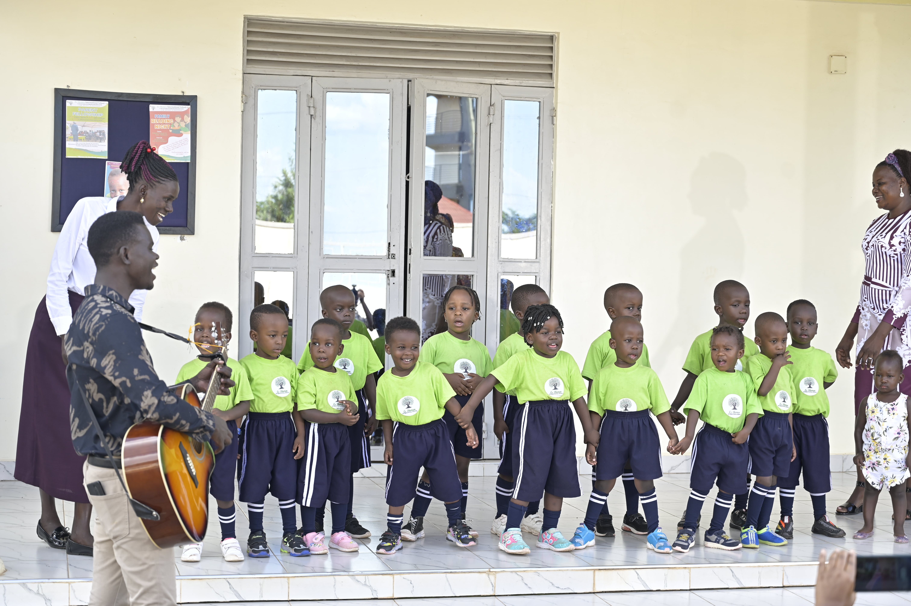

Plot 9B, Dokolo Road, Lira district, Uganda
info@esis.ac.ug
+256 777 230 537
Es Shemen International School was established as a private school in Lira City in northern Uganda to provide alternative curriculum to this region which uses the predominant Ugandan national education curriculum. In fact, until now, there was no international school in the entire north of the country. The vision is to provide a learning space for expatriates, and nationals who desire to have their children educated using an international curriculum. Some of these parents have been taking their children to Kampala to access schools with international curricula, especially the Accelerated Christian Education Curriculum.
Es Shemen is the Hebrew name for Olive Tree or literary, “tree of oil.” It originates from a primitive root word meaning “to shine.” It means “richness, anointing, fat, fruitful, oil, ointment, medicament, olive.” It is related to the word “Shemesh,” which means “to be brilliant,” which also is the Hebrew word for the brightly shining sun. The olive tree is one of the oldest and most valuable trees in the Bible. It first appeared in scriptures in Genesis 8:11 when the dove that Noah sent returned with an olive branch. Since then, the olive branch has symbolized peace.
Playgroup is for babies, toddlers and pre-school aged children. Playgroup provides welcoming supportive environment for all children to come together regardless of cultural, social or economic backgrounds. Creative and unstructured learning through play is essential to the development of young children, helping them explore and understand their world. According to research by the Telethon Kids Institute, the benefits of playgroup are seen across all domains of child development: physical, social, emotional, language and cognitive development and communication.
Pre-Kindergarten (also called Pre-K or PK) is a voluntary classroom-based preschool program for children below the age of five, popular in north America and Europe. Pre-kindergartens play an important role in early childhood education
Kindergarten is a preschool educational approach based on playing, singing, practical activities such as drawing, and social interaction as part of the transition from home to school. Such institutions were originally made in the late 18th century in Germany, Bavaria and Alsace to serve children whose parents both worked outside home. The term was coined by German pedagogue Friedrich Fröbel, whose approach globally influenced early-years education (Wikipedia). Kinder has since grown into a robust system around the world with many different approaches
As an International School, Es Shemen International School (ESIS) accepts students from all over the world, offering flexible grade placement options based on age and academic background. We are proud to be a non-selective School, providing a genuine opportunity to all students who seek to achieve more than they believe they can, with the right guidance and support. We, therefore, cater to students with a variety of academic backgrounds, which means it is necessary for our Admissions Team to assess each child’s application.
To be a learning center of excellence for raising God fearing, responsible, and highly skilled global citizens
To provide a unique and holistic education that is grounded in biblical principles, personal responsibility, creativity and innovation in learning
Vision Statement
To be a learning center of excellence for raising God fearing, responsible, and highly skilled global citizens
Sobriety
We foster the life skills of sobriety, wisdom, discretion and fairness.
Integrity
We promote consistency in adhering to biblical principles in word and in deed.
Servanthood
We strive to serve God and others with humility, generosity and compassion.
Prof. Dokotum has a PhD in English from Northern Illinois...
Mrs. Dokotum has a Bachelor of Science in Education...
Mr. Ogwal has an MA in Organizational Leadership from Eastern...

Es Shemen International School (ESIS) is a private International School that uses the Accelerated Christian Education (A.C.E.) School of Tomorrow curriculum.
Plot 9B, Dokolo Road, Lira district, Uganda
info@esis.ac.ug
+256 777 230 537
Es Shemen International School © All rights reserved | Designed by Arim Peter and updated by Kakebe Technology Limited